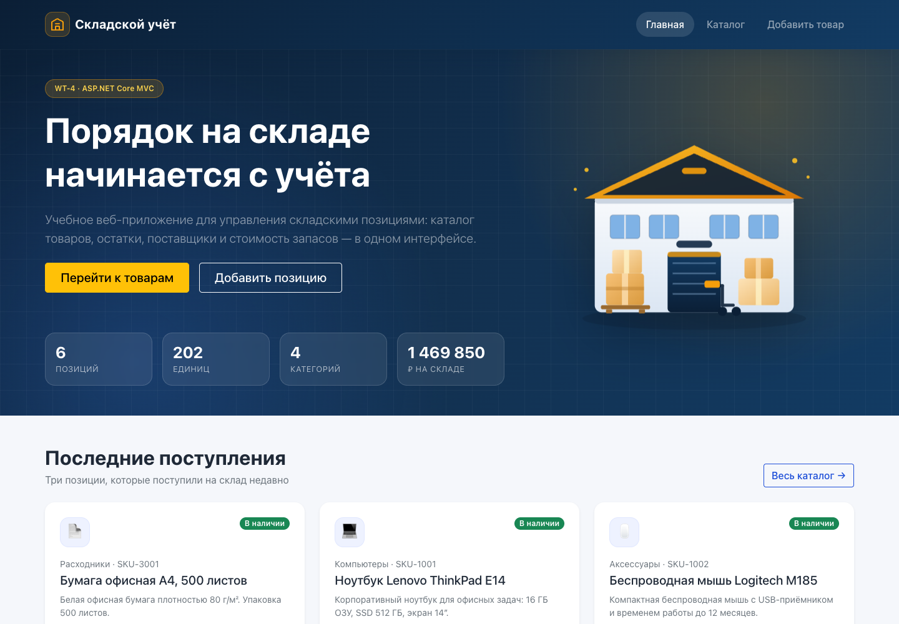
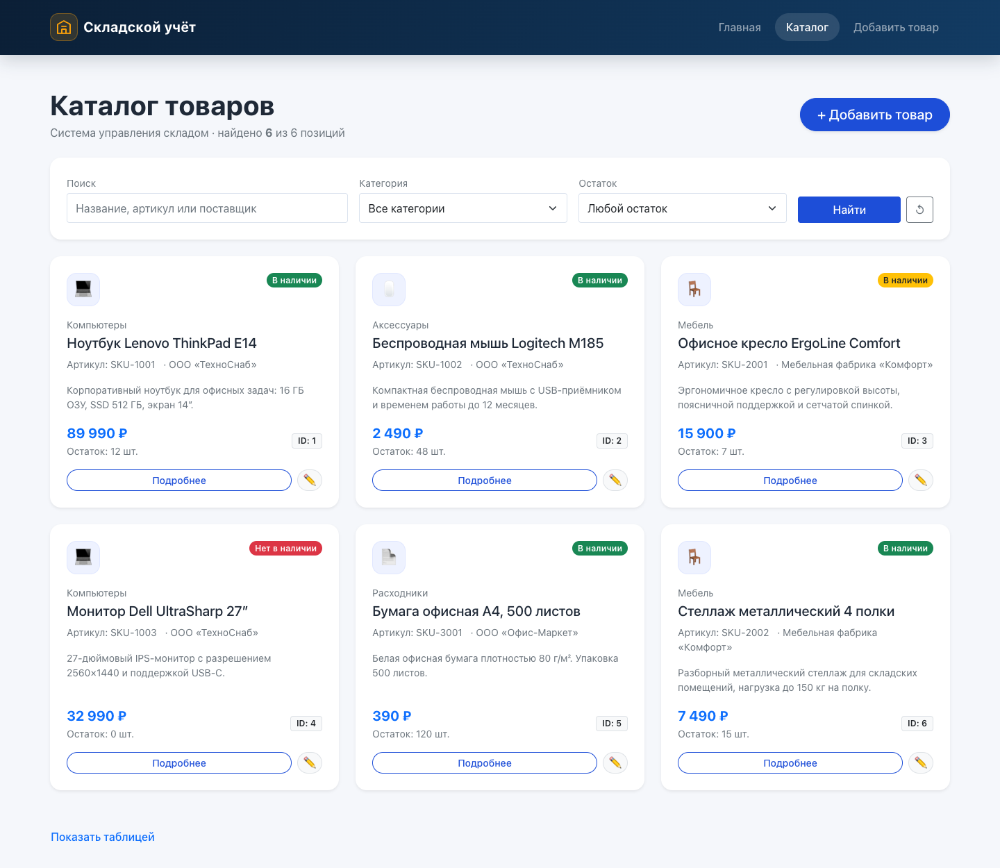
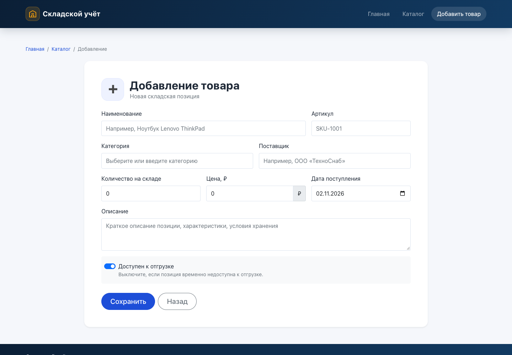
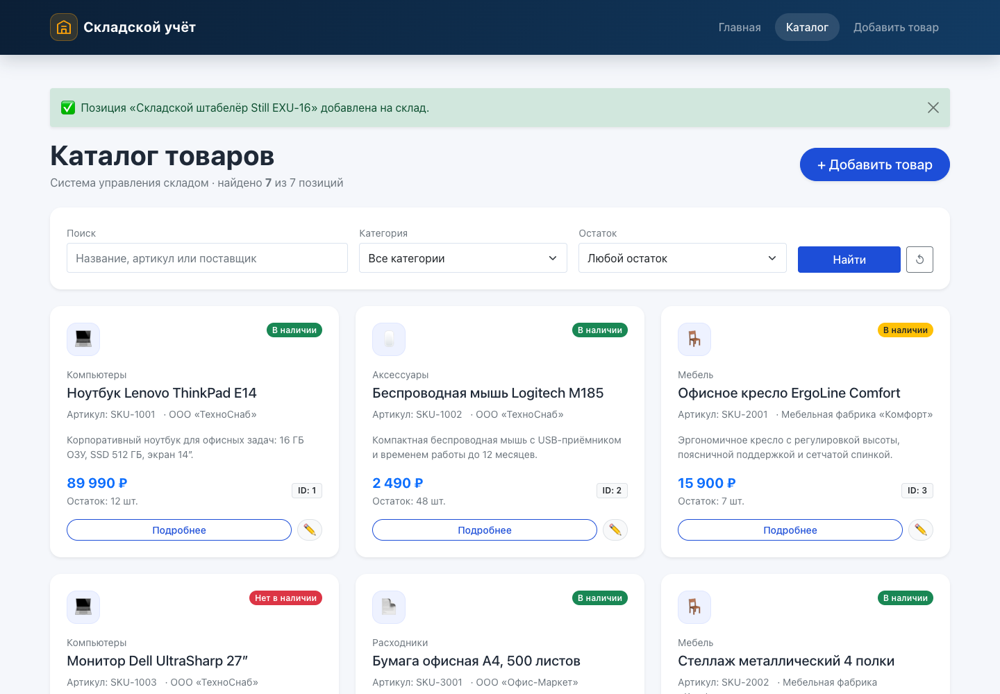
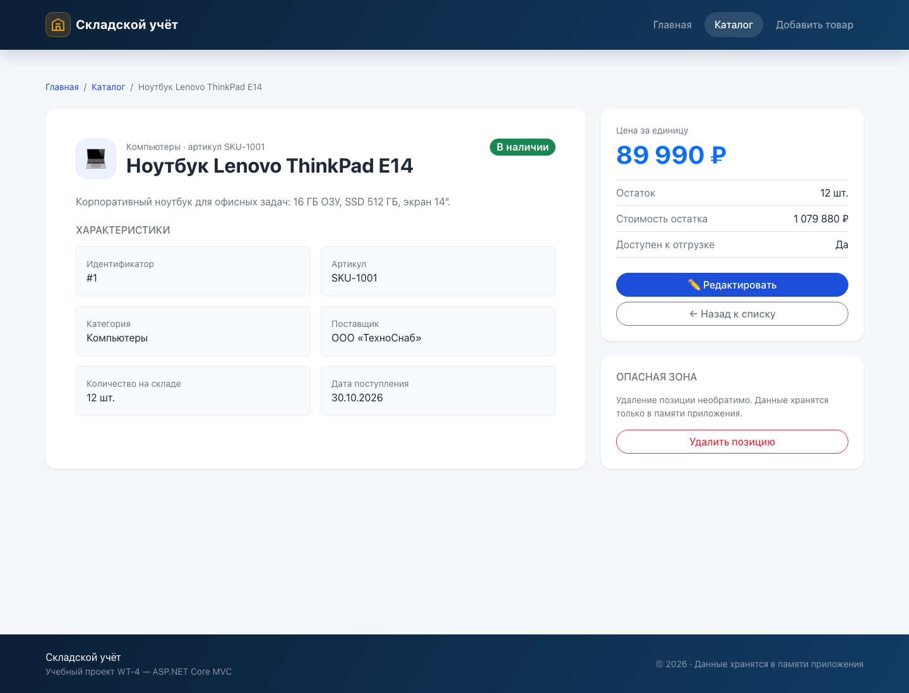
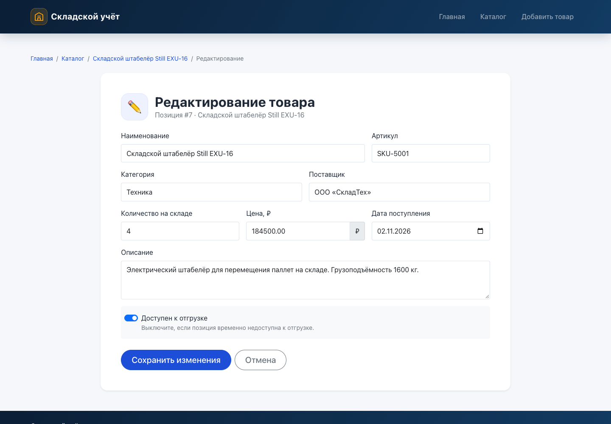
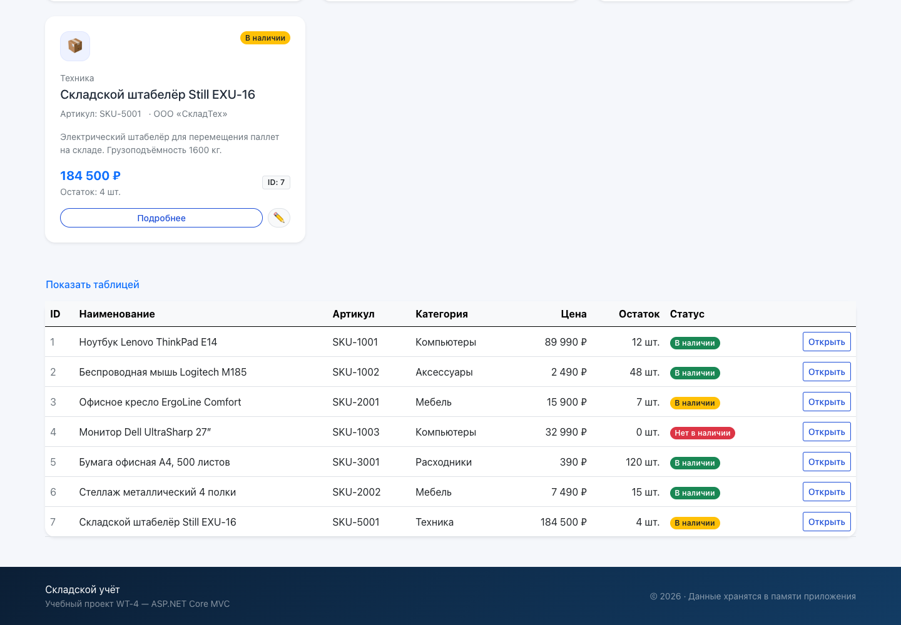
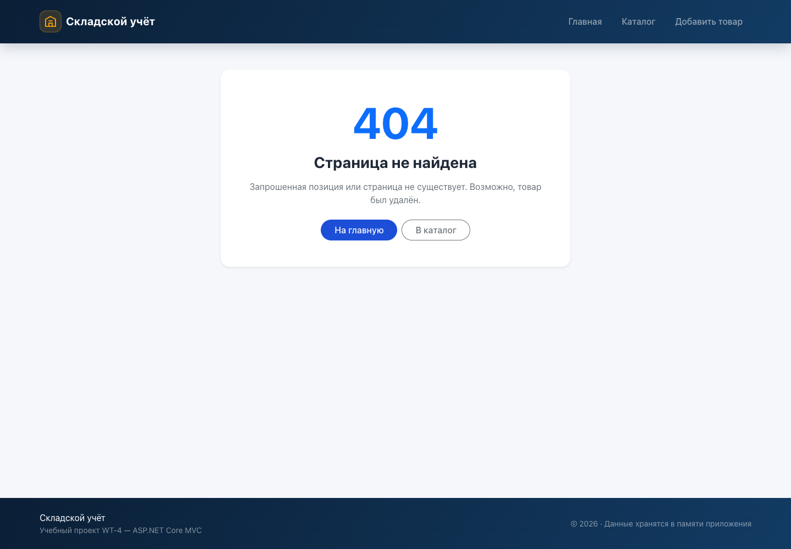

Предметная область: «Складской учёт»
Проект: wt-lab4-4mvc-ostashevskaya
Выполнила: Осташевская Дарья
Стек: ASP.NET Core 8 MVC, Razor, Bootstrap 5, Docker, Render
Год: 2026
Освоить разработку веб-приложений с использованием архитектурного подхода ASP.NET Core MVC и подготовить приложение к публикации на платформе Render.
В ходе работы необходимо было:
Controllers, Models, Views, wwwroot, Program.cs;В соответствии с условием лабораторной работы база данных не используется: все данные хранятся в памяти приложения и сбрасываются при перезапуске процесса.
Предметная область — складской учёт. Приложение предназначено для ведения каталога складских позиций: товаров, комплектующих, мебели и расходных материалов. Для каждой позиции хранятся наименование, артикул, категория, поставщик, количество, цена, описание, дата поступления и признак доступности к отгрузке.
| Сущность | Назначение |
|---|---|
Product | Складская позиция — центральная модель предметной области. |
HomeViewModel | Сводные показатели для главной страницы: количество позиций, единиц, категорий и стоимость запасов. |
ProductRepository | Хранилище в памяти: начальные данные и операции чтения/добавления/изменения/удаления. |
DisplayHelper | Вспомогательные методы оформления: иконка категории и CSS-класс статуса. |
В ProductRepository подготовлено шесть объектов различных категорий.
Этого достаточно для выполнения требования «не менее пяти объектов» и демонстрации
разных состояний остатка.
| ID | Наименование | Категория | Цена, ₽ | Остаток | Статус |
|---|---|---|---|---|---|
| 1 | Ноутбук Lenovo ThinkPad E14 | Компьютеры | 89 990 | 12 | В наличии |
| 2 | Беспроводная мышь Logitech M185 | Аксессуары | 2 490 | 48 | В наличии |
| 3 | Офисное кресло ErgoLine Comfort | Мебель | 15 900 | 7 | Низкий остаток |
| 4 | Монитор Dell UltraSharp 27″ | Компьютеры | 32 990 | 0 | Нет в наличии |
| 5 | Бумага офисная А4, 500 листов | Расходники | 390 | 120 | В наличии |
| 6 | Стеллаж металлический 4 полки | Мебель | 7 490 | 15 | В наличии |
Проект создан командой dotnet new mvc -n wt-lab4-4mvc-ostashevskaya
и доработан под предметную область. Структура каталогов:
wt-lab4-4mvc-ostashevskaya/
├── Controllers/
│ ├── HomeController.cs
│ └── ProductController.cs
├── Data/
│ └── ProductRepository.cs
├── Helpers/
│ └── DisplayHelper.cs
├── Infrastructure/
│ └── InvariantDecimalModelBinder.cs
├── Models/
│ ├── HomeViewModel.cs
│ ├── Product.cs
│ └── ErrorViewModel.cs
├── Views/
│ ├── Home/
│ │ ├── Index.cshtml
│ │ ├── Privacy.cshtml
│ │ └── Status.cshtml
│ ├── Product/
│ │ ├── Index.cshtml
│ │ ├── Details.cshtml
│ │ ├── Create.cshtml
│ │ ├── Edit.cshtml
│ │ └── _ProductForm.cshtml
│ └── Shared/
│ ├── _Layout.cshtml
│ ├── _ValidationScriptsPartial.cshtml
│ └── Error.cshtml
├── wwwroot/
│ ├── css/site.css
│ ├── images/warehouse.svg
│ └── lib/ (Bootstrap, jQuery, валидация)
├── Dockerfile
├── render.yaml
├── Program.cs
├── README.md
└── wt-lab4-4mvc-ostashevskaya.csproj| Каталог / файл | Роль в MVC |
|---|---|
Controllers/ | Обрабатывает HTTP-запросы, вызывает модель и выбирает представление. |
Models/ | Описывает предметную область и правила валидации. |
Views/ | Razor-шаблоны, формирующие HTML на основе модели. |
wwwroot/ | Статические файлы: CSS, JavaScript, изображения, библиотеки Bootstrap и jQuery. |
Program.cs | Настройка сервисов, конвейера middleware, маршрутизации и порта приложения. |
_Layout.cshtml | Общий каркас страниц: навигация, подключение CSS/JS, подвал, @RenderBody(). |
Модель Product содержит десять свойств и правила валидации через
Data Annotations. Дополнительно вычисляются стоимость остатка и
текстовый статус позиции.
using System.ComponentModel.DataAnnotations;
namespace wt_lab4_4mvc_ostashevskaya.Models;
public class Product
{
public int Id { get; set; }
[Required(ErrorMessage = "Укажите наименование товара")]
[StringLength(100, MinimumLength = 2)]
[Display(Name = "Наименование")]
public string Name { get; set; } = string.Empty;
[Required(ErrorMessage = "Укажите артикул")]
[StringLength(20, MinimumLength = 2)]
[Display(Name = "Артикул")]
public string Sku { get; set; } = string.Empty;
[Required(ErrorMessage = "Выберите категорию")]
[Display(Name = "Категория")]
public string Category { get; set; } = string.Empty;
[StringLength(100)]
[Display(Name = "Поставщик")]
public string Supplier { get; set; } = string.Empty;
[Range(0, 1_000_000)]
[Display(Name = "Количество на складе")]
public int Quantity { get; set; }
[Range(0.01, 10_000_000)]
[Display(Name = "Цена, ₽")]
public decimal Price { get; set; }
[StringLength(500)]
[Display(Name = "Описание")]
public string Description { get; set; } = string.Empty;
[Display(Name = "Доступен к отгрузке")]
public bool IsAvailable { get; set; } = true;
[DataType(DataType.Date)]
[Display(Name = "Дата поступления")]
public DateTime ReceivedAt { get; set; } = DateTime.Today;
public decimal TotalValue => Price * Quantity;
public string StockStatus => Quantity == 0
? "Нет в наличии"
: IsAvailable ? "В наличии" : "Недоступен";
}| Свойство | Тип | Назначение | Ограничение |
|---|---|---|---|
Id | int | Уникальный идентификатор | Назначается хранилищем |
Name | string | Наименование позиции | 2–100 символов, обязательно |
Sku | string | Артикул | 2–20 символов, обязательно |
Category | string | Категория | Обязательно |
Supplier | string | Поставщик | До 100 символов |
Quantity | int | Количество на складе | 0–1 000 000 |
Price | decimal | Цена за единицу | Больше 0 |
Description | string | Описание | До 500 символов |
IsAvailable | bool | Доступность к отгрузке | — |
ReceivedAt | DateTime | Дата поступления | — |
TotalValue | decimal | Цена × количество | Вычисляемое |
StockStatus | string | Текстовый статус | Вычисляемое |
Контроллер ProductController наследуется от Controller и
содержит действия для каталога и CRUD-операций. Каждое действие возвращает
IActionResult.
| HTTP | URL | Действие | Результат |
|---|---|---|---|
| GET | /Product/Index | Index(search, category, status) | Каталог с фильтрами |
| GET | /Product/Details/1 | Details(id) | Карточка или 404 |
| GET | /Product/Create | Create() | Форма создания |
| POST | /Product/Create | Create(Product) | Редирект на Index |
| GET | /Product/Edit/1 | Edit(id) | Форма редактирования |
| POST | /Product/Edit/1 | Edit(id, Product) | Редирект на Index |
| POST | /Product/Delete/1 | Delete(id) | Редирект на Index |
public IActionResult Index(string? search, string? category, string? status)
{
var products = ProductRepository.GetAll().AsEnumerable();
if (!string.IsNullOrWhiteSpace(search))
{
var query = search.Trim();
products = products.Where(product =>
product.Name.Contains(query, StringComparison.OrdinalIgnoreCase) ||
product.Sku.Contains(query, StringComparison.OrdinalIgnoreCase) ||
product.Supplier.Contains(query, StringComparison.OrdinalIgnoreCase));
}
if (!string.IsNullOrWhiteSpace(category))
products = products.Where(product => product.Category == category);
products = status switch
{
"in-stock" => products.Where(p => p.Quantity > 0 && p.IsAvailable),
"low-stock" => products.Where(p => p.Quantity is > 0 and <= 10),
"out-of-stock" => products.Where(p => p.Quantity == 0),
_ => products
};
ViewBag.Categories = ProductRepository.GetCategories();
return View(products.ToList());
}public IActionResult Details(int id)
{
var product = ProductRepository.GetById(id);
if (product is null)
{
return NotFound(); // HTTP 404
}
return View(product);
}Используется маршрут по умолчанию:
app.MapControllerRoute(
name: "default",
pattern: "{controller=Home}/{action=Index}/{id?}");Цепочка обработки запроса:
Например, запрос /Product/Details/1 разбирается как
controller = Product, action = Details, id = 1.
ASP.NET Core находит ProductController, вызывает метод
Details(1), получает объект из хранилища и передаёт его в
Views/Product/Details.cshtml. Вариант
/Product/Details?id=1 работает за счёт связывания параметра из query string.
Представления используют синтаксис Razor: директиву @model,
циклы @foreach, условные конструкции и Tag Helpers.
| Файл | Назначение |
|---|---|
Views/Home/Index.cshtml | Главная страница: hero-блок, статистика, последние поступления, преимущества. |
Views/Product/Index.cshtml | Каталог: карточки, поиск, фильтры, раскрывающаяся таблица. |
Views/Product/Details.cshtml | Подробная карточка позиции и блок действий. |
Views/Product/Create.cshtml | Форма добавления. |
Views/Product/Edit.cshtml | Форма редактирования. |
Views/Product/_ProductForm.cshtml | Общие поля формы для Create и Edit. |
Views/Shared/_Layout.cshtml | Общий каркас: navbar, footer, подключение ресурсов. |
Views/Home/Status.cshtml | Страница ошибки, в том числе 404. |
@model List<Product>
<h1>Каталог товаров</h1>
<p>Найдено: @Model.Count</p>
<div class="row g-4">
@foreach (var product in Model)
{
<div class="col-12 col-md-6 col-lg-4">
<div class="card h-100 shadow-sm rounded-4">
<div class="card-body">
<h2 class="h5">@product.Name</h2>
<p>@product.Price.ToString("N0") ₽</p>
<a asp-action="Details"
asp-route-id="@product.Id"
class="btn btn-outline-primary">
Подробнее
</a>
</div>
</div>
</div>
}
</div>
В представлениях используются asp-action, asp-controller,
asp-route-id, asp-for, asp-validation-for и
asp-validation-summary. Они позволяют не писать URL вручную: адреса
генерируются на основе маршрутизации, а поля формы связываются со свойствами модели.
<a asp-controller="Product" asp-action="Details"
asp-route-id="@product.Id">Подробнее</a>
<input asp-for="Price" class="form-control" type="text"
inputmode="decimal" placeholder="0,00" />
<span asp-validation-for="Price" class="text-danger small"></span>Добавление товара реализовано по схеме Post/Redirect/Get: GET показывает форму, POST сохраняет объект и перенаправляет пользователя на каталог. Это защищает от повторной отправки формы при обновлении страницы.
public IActionResult Create()
{
FillCategories();
return View(new Product());
}[HttpPost]
[ValidateAntiForgeryToken]
public IActionResult Create(Product product)
{
if (!ModelState.IsValid)
{
FillCategories();
return View(product);
}
ProductRepository.Add(product);
TempData["Success"] = $"Позиция «{product.Name}» добавлена на склад.";
return RedirectToAction(nameof(Index));
}Ключевые элементы:
[HttpPost] ограничивает действие только POST-запросами;[ValidateAntiForgeryToken] защищает от CSRF, форма содержит антифорджери-токен;ModelState.IsValid проверяет Data Annotations;TempData["Success"] показывает уведомление после редиректа;RedirectToAction(nameof(Index)) реализует PRG-паттерн.
Поля формы помечены атрибутами [Required], [StringLength],
[Range]. На клиенте работает jQuery Validation, на сервере — повторная
проверка модели. Дополнительно реализован InvariantDecimalModelBinder:
цена принимается и с точкой, и с запятой, независимо от настроек культуры и браузера.
[HttpPost]
[ValidateAntiForgeryToken]
public IActionResult Edit(int id, Product product)
{
if (id != product.Id) return BadRequest();
if (!ModelState.IsValid)
{
FillCategories();
return View(product);
}
if (!ProductRepository.Update(product)) return NotFound();
TempData["Success"] = $"Изменения по позиции «{product.Name}» сохранены.";
return RedirectToAction(nameof(Index));
}
[HttpPost]
[ValidateAntiForgeryToken]
public IActionResult Delete(int id)
{
var product = ProductRepository.GetById(id);
if (product is null) return NotFound();
ProductRepository.Delete(id);
TempData["Success"] = $"Позиция «{product.Name}» удалена со склада.";
return RedirectToAction(nameof(Index));
}Помимо обязательного минимума реализованы поиск, фильтрация, подробная карточка, редактирование, удаление и корректная обработка отсутствующих объектов.
Параметры передаются GET-запросом, поэтому результат фильтрации можно сохранить в закладках или отправить ссылкой.
Статус вычисляется по количеству и признаку доступности. Для оформления используется
DisplayHelper.StatusBadgeClass:
| Условие | Статус | Bootstrap-класс |
|---|---|---|
Quantity == 0 | Нет в наличии | bg-danger |
IsAvailable == false | Недоступен | bg-secondary |
Quantity <= 10 | В наличии | bg-warning text-dark |
| Иначе | В наличии | bg-success |
Если позиция не найдена, действие возвращает NotFound() — HTTP-статус 404.
В Program.cs подключена страница статуса:
app.UseStatusCodePagesWithReExecute("/Home/Status", "?code={0}");Пользователь видит оформленную страницу с кодом ошибки и кнопками возврата, при этом HTTP-статус ответа остаётся 404.
На странице Details кнопка удаления отправляет POST-форму и запрашивает подтверждение
через confirm(). После удаления выполняется редирект в каталог с сообщением
об успехе.
Интерфейс построен на Bootstrap 5.1 и дополнен собственными стилями в
wwwroot/css/site.css. Используются адаптивная сетка, карточки,
бейджи, кнопки, формы, навигация и hover-эффекты.
container, row, col-12, col-md-6, col-lg-4, g-4, d-flex, justify-content-between, align-items-center.
card, card-body, shadow-sm, rounded-4, badge, bg-success, bg-danger, bg-warning.
navbar, navbar-expand-lg, navbar-dark, nav-link, btn, btn-primary, btn-outline-primary, rounded-pill.
form-label, form-control, form-select, form-check, input-group, table, table-hover, table-responsive.
alt и aria-hidden,
у навигации есть aria-label, у кнопок — текстовые подписи или title,
цвета статусов дополнены текстом, а анимация отключается при
prefers-reduced-motion.
Для Render используется Web Service с runtime Docker: Render собирает образ по Dockerfile и запускает контейнер. Dockerfile состоит из двух стадий: сборка на образе SDK и запуск на компактном runtime-образе.
# Build stage
FROM mcr.microsoft.com/dotnet/sdk:8.0 AS build
WORKDIR /src
COPY ["wt-lab4-4mvc-ostashevskaya.csproj", "./"]
RUN dotnet restore "wt-lab4-4mvc-ostashevskaya.csproj"
COPY . .
RUN dotnet publish "wt-lab4-4mvc-ostashevskaya.csproj" \
-c Release \
-o /app/publish \
/p:UseAppHost=false
# Runtime stage
FROM mcr.microsoft.com/dotnet/aspnet:8.0 AS final
WORKDIR /app
COPY --from=build /app/publish .
ENV ASPNETCORE_ENVIRONMENT=Production
ENV ASPNETCORE_URLS=http://0.0.0.0:10000
EXPOSE 10000
ENTRYPOINT ["dotnet", "wt-lab4-4mvc-ostashevskaya.dll"]
Render передаёт порт через переменную окружения PORT. В
Program.cs приложение явно слушает все интерфейсы:
var port = Environment.GetEnvironmentVariable("PORT") ?? "10000";
builder.WebHost.UseUrls($"http://0.0.0.0:{port}");
Привязка к 0.0.0.0 обязательна: контейнер должен принимать соединения
не только с localhost, а с интерфейса, доступного reverse-proxy Render.
HTTPS завершается на стороне Render; приложение внутри контейнера работает по HTTP.
dotnet restore
dotnet run
# либо с явным портом
PORT=10000 dotnet run
# сборка Docker-образа
docker build -t wt-lab4-4mvc-ostashevskaya .
docker run --rm -p 10000:10000 -e PORT=10000 wt-lab4-4mvc-ostashevskayadotnet publish -c Release. На Render этот же Dockerfile используется
для сборки образа; скриншоты Build Logs и Deploy Logs добавляются после подключения аккаунта.
Публикация выполняется через Git-репозиторий и Render Web Service. Порядок действий:
main.PORT управляемой Render (по умолчанию 10000).https://<имя-сервиса>.onrender.com
и проверить страницы /, /Product/Index,
/Product/Details/1, /Product/Create,
/Product/Edit/1.Для воспроизводимого создания сервиса добавлен Blueprint:
services:
- type: web
name: wt-lab4-4mvc-ostashevskaya
runtime: docker
plan: free
branch: main
dockerfilePath: ./Dockerfile
envVars:
- key: ASPNETCORE_ENVIRONMENT
value: Production
При подключённом GitHub-репозитории Render запускает новый deployment после каждого
push в выбранную ветку. Достаточно изменить приложение, выполнить
git add ., git commit и git push — Render
пересоберёт образ и обновит работающий сервис.
| Этап | Статус | Комментарий |
|---|---|---|
| Git-репозиторий | Подготовлен локально | История из осмысленных коммитов |
| Dockerfile | Готов | Multi-stage build, .NET 8, порт 10000 |
| render.yaml | Готов | Docker Web Service, branch main |
| Публикация на Render | Требует аккаунта | Нужен GitHub-репозиторий и вход в Render |
| Публичный URL | Ожидает деплоя | Указывается после успешного deployment |
| Скриншоты Render | Ожидают деплоя | Dashboard, Build Logs, Deploy Logs |
Бесплатный Web Service на Render переходит в режим ожидания после периода неактивности. Первый запрос после паузы может выполняться дольше обычного — это нормальное поведение платформы, а не ошибка приложения.
Скриншоты сделаны при локальном запуске приложения на
http://127.0.0.1:5080. Данные на скриншотах соответствуют
in-memory хранилищу; после добавления седьмой позиции каталог содержит 7 товаров.








Product и HomeViewModel.ProductController и HomeController.Views и используют @model, @foreach и Tag Helpers.{controller=Home}/{action=Index}/{id?}.Details(int id) или Create(Product product).ViewResult, RedirectToActionResult, NotFoundResult, BadRequestResult и другие типы ответов..cshtml со смесью HTML и C#. Razor компилирует его в класс представления и вставляет данные модели в разметку.@ для выражений и директив, @{ } для блоков кода, @foreach и @if для управления разметкой.Model, а ошибки типов выявляются при компиляции.Product.asp-action превращается в корректный href, а asp-for — в поля с именем и валидацией.id в route values. Так ссылка asp-action="Details" asp-route-id="@product.Id" ведёт на /Product/Details/1.@RenderBody(), куда вставляется содержимое конкретного представления.PORT и слушает этот порт, по умолчанию 10000.dotnet run на localhost с development-настройками. На Render оно работает в контейнере, слушает 0.0.0.0:$PORT, использует Production-окружение и внешний HTTPS reverse-proxy.
В ходе лабораторной работы было разработано полноценное веб-приложение
«Складской учёт» на ASP.NET Core MVC 8. Реализованы модель
Product с валидацией, in-memory хранилище, контроллер с действиями
Index/Details/Create/Edit/Delete, маршрутизация, Razor Views, обработка GET- и
POST-запросов, поиск и фильтрация, а также оформление на Bootstrap 5.
Приложение проверено локально: главная страница, каталог, карточка позиции,
добавление, редактирование, удаление и обработка 404 работают корректно.
Подготовлены Dockerfile с multi-stage сборкой, конфигурация render.yaml
и README с инструкцией по публикации.
В результате освоены принципы MVC, работа с Razor, Tag Helpers, валидацией и маршрутизацией, а также подход к упаковке ASP.NET Core-приложения в Docker и публикации в виде Web Service. Ограничением текущей версии остаётся хранение данных в памяти; перенос в PostgreSQL и завершение деплоя на Render являются следующими шагами.
| Материал | Ссылка / путь |
|---|---|
| Git-репозиторий | https://github.com/<ваш-логин>/wt-lab4-4mvc-ostashevskaya |
| Опубликованное приложение | https://<имя-сервиса>.onrender.com |
| Исходный код | wt-lab4-4mvc-ostashevskaya/ |
| Dockerfile | Dockerfile |
| Конфигурация Render | render.yaml |
| Инструкция | README.md |
| Скриншоты | docs/screenshots/ |